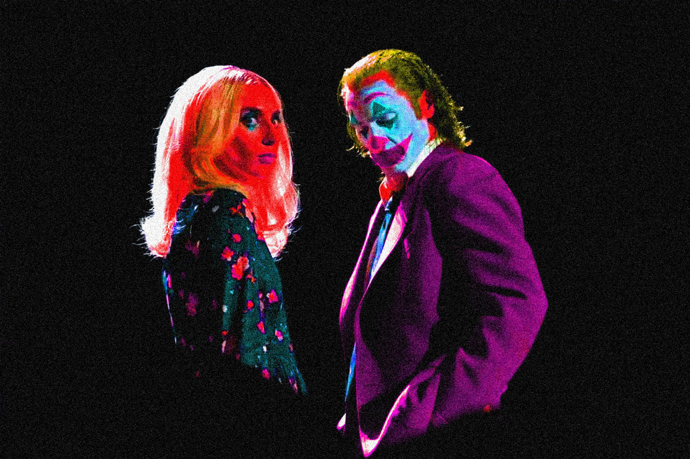

I didn’t expect the theater experience that I was going to have when purchasing tickets for the 2024 sequel to Joker. This perhaps makes my review of the experience even more interesting, as the sensory experience of it all was heightened beyond my expectations.
For some background, I was quite excited for the new Joker film. I respect what the first film did back in 2019. It made a billion dollars in its box office and garnered a fanbase that could resonate with the character of the Joker largely due to Todd Phillips (Director) and Joaquin Phoenix’s performance. It even earned Phoenix an Oscar. It even earned Phoenix an Oscar I did enjoy the film but wasn’t necessarily amazed by it. Liked it, yes. Loved it, not quite. The pacing felt a bit too slow for my personal taste but I appreciated a lot of other aspects of the film. I also watched it from home and not at the theater. So, why was I excited for the sequel? Well, I adore the character of Harley Quinn and have for a long time since my childhood. Being a DC fan as a kid introduced me to the character and I appreciated the different renditions of her. Her personality, origin story, and overall aesthetic appealed to me. On top of that, I was very excited that Lady Gaga was cast as her because I’ve also been a Lady Gaga fan since I was a child and had multiple CD's of hers. The casting felt weirdly perfect to me because I knew Gaga would be able to channel the dichotomy of a “craziness” of Harley while maintaining the seriousness needed for the role. And of course, the trailers excited me. Unfortunately, the advertising wasn’t accurate to how the film played out. It was slightly but it led many to believe, including myself, that Gaga would have a more prominent role. Also, I didn’t think it would be so musical heavy which I didn’t mind for the first half but passed that it started to drag along and genuinely felt like it had no purpose in moving the plot forward.
I decided to buy my tickets to the regal theater in Battery Park regal theater in Battery Park. I love the Battery so much and felt like exploring it a bit more. There’s a calmness about the area because it doesn’t feel as crowded or compact as Manhattan, at least when you go a little outside of the park. It was also nighttime. I took the subway there. It was quite crowded as it was nearing the end of after work rush hour. Funnily enough, it was still pretty crowded going home after the movie also. I decided to wear one of my favorite button up shirts that I hadn’t ever worn prior which was acid wash with a blend of mahogany brown and green. My bag is purple also which matched the theme. The walk from the station was about 10 minutes. I navigated my way through with my handy google maps. The scenery and city atmosphere of the walk was very nice. There weren’t too many people around and the streets/buildings were well lit. The area made me feel safe, another reason why I adore Battery Park so much. The theater was a few escalators up, connected to another building. Writing this makes me realize just how fancy the area truly felt. I got popcorn and a Pepsi ICEE. The theater staff were incredibly nice. I made my way to the theater.
SPOILER SECTION:
For the film itself, again I didn’t expect it to be so musical heavy. I don’t mind musicals in general it just felt like an odd choice for this one because of how different it was compared to the first. Even if they cut half of the songs out of the film, I’d be okay with that. Let me predict that I did enjoy parts of the film. I also heavily disliked other parts but generally think the film received more backlash than it deserved. The majority of reviews were not good and its box office was very low. I did not like how they ended the film with Harley walking away from the Joker because it wasn’t satisfying enough and felt like her character never reached her full potential, along with the Joker. And the ending with him dying was very off putting. It just felt as if Todd Philips killed everything that made people love the first film. There was potential but it never fully went where it should’ve in my opinion.
The theater experience and atmosphere was not the best. I heard murmuring throughout of people being put off by the music. There was also a couple in front of me by the third act that were scrolling on their phones. Being on your phone in the immersive environment in a dark theater feels a bit rude to me. It was pretty clear people were not enjoying the film. On my way out, two people asked me if I’d seen the film, likely due to my outfit. I responded yes and they asked what my thoughts were. I told them I liked and didn’t like parts of it and that it was just okay. I imagine they were deciding if they were about to see it as they both smiled and had contemplating faces. An interesting experience and just an okay movie.